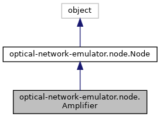

Inheritance diagram for optical-network-emulator.node.Amplifier:

Collaboration diagram for optical-network-emulator.node.Amplifier:
Public Member Functions | |
| def | __init__ (self, name, amplifier_type='EDFA', target_gain=17.6, noise_figure=(5.5, 91), noise_figure_function=None, bandwidth=32.0e9, wavelength_dependent_gain_id=None, preamp=False, boost=False, monitor_mode=None, debugger=False) |
| def | reset (self) |
| def | monitor_query (self) |
| def | reset_gain (self) |
| def | power_excursions_flags_off (self) |
| def | load_wavelength_dependent_gain (self, wavelength_dependent_gain_id) |
| def | set_ripple_function (self, wavelength_dependent_gain_id) |
| def | get_wavelength_dependent_gain (self, signal_index) |
| def | output_amplified_power (self, optical_signal) |
| def | nli_compensation (self, optical_signal) |
| def | stage_amplified_spontaneous_emission_noise (self, optical_signal) |
| def | compute_power_excursions (self) |
| def | propagate (self, optical_signals, is_last_port=False, safe_switch=False) |
| def | set_gain (self, gain_dB) |
| def | __repr__ (self) |
| def | mock_amp_gain_adjust (self, new_gain) |
 Public Member Functions inherited from optical-network-emulator.node.Node Public Member Functions inherited from optical-network-emulator.node.Node | |
| def | __init__ (self, name, debugger=True) |
| def | set_output_port (self, dst_node, link, output_port=-1) |
| def | set_input_port (self, src_node, link, input_port=-1) |
| def | include_optical_signal_in (self, optical_signal, power=None, ase_noise=None, nli_noise=None, in_port=0) |
| def | include_optical_signal_out (self, optical_signal, power=None, ase_noise=None, nli_noise=None, out_port=None) |
| def | remove_optical_signal (self, optical_signal) |
| def | remove_signal_from_out_port (self, port_out, optical_signal) |
| def | reset_component (self) |
| def | describe (self) |
Static Public Member Functions | |
| def | get_noise_figure (noise_figure, noise_figure_function) |
Public Attributes | |
| target_gain | |
| system_gain | |
| noise_figure | |
| bandwidth | |
| wavelength_dependent_gain | |
| monitor | |
| power_excursions_flag_1 | |
| power_excursions_flag_2 | |
| prev_component | |
| next_component | |
| link | |
| Public Attributes inherited from optical-network-emulator.node.Node | |
| name | |
| debugger | |
| ports_in | |
| port_to_node_in | |
| node_to_port_in | |
| link_to_port_in | |
| ports_out | |
| port_to_node_out | |
| node_to_port_out | |
| port_to_link_out | |
| port_to_optical_signal_in | |
| optical_signal_to_port_in | |
| port_to_optical_signal_out | |
| optical_signal_to_port_out | |
| output_port_base | |
| input_port_base | |
Additional Inherited Members | |
| Static Public Attributes inherited from optical-network-emulator.node.Node | |
| int | input_port_base = 0 |
| int | output_port_base = 0 |
Constructor & Destructor Documentation
◆ __init__()
| def optical-network-emulator.node.Amplifier.__init__ | ( | self, | |
| name, | |||
amplifier_type = 'EDFA', |
|||
target_gain = 17.6, |
|||
noise_figure = (5.5, 91), |
|||
noise_figure_function = None, |
|||
bandwidth = 32.0e9, |
|||
wavelength_dependent_gain_id = None, |
|||
preamp = False, |
|||
boost = False, |
|||
monitor_mode = None, |
|||
debugger = False |
|||
| ) |
:param amplifier_type: OBSOLETE; kept for backwards compatibility :param target_gain: units: dB - float :param noise_figure: tuple with NF value in dB and number of channels (def. 90) :param noise_figure_function: custom NF function with values in dB :param bandwidth: measurement optical bandwidth units: GHz - float :param wavelength_dependent_gain_id: file name id (see top of script) units: dB - string :param preamp: OBSOLETE; kept for backwards compatibility :param boost: OBSOLETE; kept for backwards compatibility
Member Function Documentation
◆ __repr__()
| def optical-network-emulator.node.Amplifier.__repr__ | ( | self | ) |
String representation
Reimplemented from optical-network-emulator.node.Node.
◆ compute_power_excursions()
| def optical-network-emulator.node.Amplifier.compute_power_excursions | ( | self | ) |
FIXME: fix algorithm based on new model Balance system gain with respect with the mean gain of the signals in the amplifier: power excursions :return:
◆ get_noise_figure()
|
static |
If noise figure is not passed as a function, create one with constant values from established NF (default value is 6 dB) :param noise_figure: tuple with NF value in dB and number of channels (def. 90) :param noise_figure_function: custom NF function with values in dB :return:
◆ get_wavelength_dependent_gain()
| def optical-network-emulator.node.Amplifier.get_wavelength_dependent_gain | ( | self, | |
| signal_index | |||
| ) |
Retrieve WDG by signal index :param signal_index: :return: WDG of signal
◆ load_wavelength_dependent_gain()
| def optical-network-emulator.node.Amplifier.load_wavelength_dependent_gain | ( | self, | |
| wavelength_dependent_gain_id | |||
| ) |
:param wavelength_dependent_gain_id: file name id (see top of script) - string :return: Return wavelength dependent gain array
◆ nli_compensation()
| def optical-network-emulator.node.Amplifier.nli_compensation | ( | self, | |
| optical_signal | |||
| ) |
Apply the amplification effects to the NLI noise and update EDFA and OpticalSignal state date structures
◆ output_amplified_power()
| def optical-network-emulator.node.Amplifier.output_amplified_power | ( | self, | |
| optical_signal | |||
| ) |
Compute the output power levels of each signal after amplification :param optical_signal: signal object
◆ propagate()
| def optical-network-emulator.node.Amplifier.propagate | ( | self, | |
| optical_signals, | |||
is_last_port = False, |
|||
safe_switch = False |
|||
| ) |
Compute the amplification process :param optical_signals: list
◆ set_gain()
| def optical-network-emulator.node.Amplifier.set_gain | ( | self, | |
| gain_dB | |||
| ) |
Configure the gain attributes
◆ set_ripple_function()
| def optical-network-emulator.node.Amplifier.set_ripple_function | ( | self, | |
| wavelength_dependent_gain_id | |||
| ) |
Update attribute self.wavelength_dependent_gain with wavelength_dependent_gain_id
◆ stage_amplified_spontaneous_emission_noise()
| def optical-network-emulator.node.Amplifier.stage_amplified_spontaneous_emission_noise | ( | self, | |
| optical_signal | |||
| ) |
:return: Ch.5 Eqs. 4-16,18 in: Gumaste A, Antony T. DWDM network designs and engineering solutions. Cisco Press; 2003.
The documentation for this class was generated from the following file:
- node.py